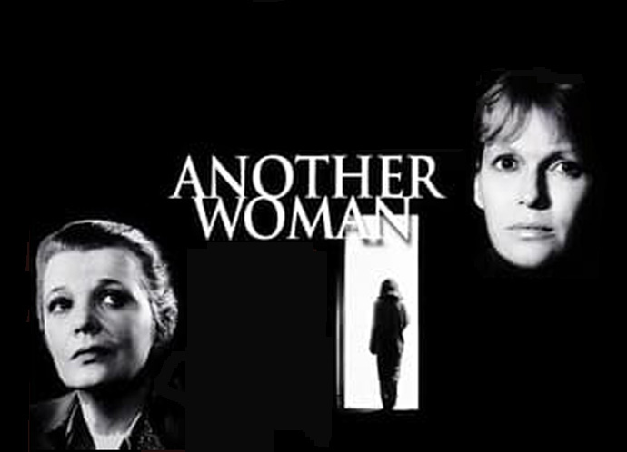
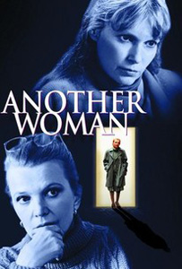
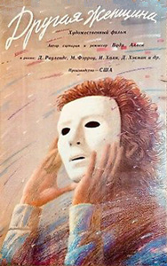

|
||||
Another Woman (1988) |
||||
 |
||||
Director |
- |
Woody Allen | ||
Producers |
- |
Robert Greenhut Jack Rollins Charles H. Joffe |
||
Screenplay |
- |
Woody Allen |
||
Cinematography |
- |
Sven Nykvist | ||
Production Designer |
- |
Santo Loquasto | ||
Costume Designer |
- |
Jeffrey Kurland | ||
Editor |
- |
Susan E. Morse | ||
Cast |
||||
Marion Post |
- |
Gena Rowlands | ||
Dr. Kenneth Post |
- |
Ian Holm | ||
Patient's Voice |
- |
Fred Melamud | ||
Hope |
- |
Mia Farrow | ||
Lydia |
- |
Blythe Danner | ||
Mark |
- |
Bruce Jay Friedman | ||
Kathy (Ken's ex-wife) |
- |
Betty Buckley | ||
Marion's Father |
- |
John Houseman | ||
Claire |
- |
Sandy Dennis | ||
Jack |
- |
Jacques Levy | ||
Lynn |
- |
Frances Conroy | ||
Paul |
- |
Harris Yulin | ||
Sam (Marion's tutor / ex-husband) |
- |
Philip Bosco | ||
Laura (Ken's daughter) |
- |
Martha Plimpton | ||
Laura's boyfriend |
- |
Josh Hamilton | ||
Larry Lewis |
- |
Gene Hackman | ||
Young Marion |
- |
Margaret Marx | ||
Young Paul |
- |
Stephen Mailer | ||
Young Marion's father |
- |
David Ogden Stiers | ||
Cynthia (Marion's ex-student) |
- |
Kathryn Grody | ||
Psychiatrist |
- |
Michael Kirby | ||
Plot |
||||
Marion Post is a New York philosophy professor on a leave of absence to write a new book. Due to construction work in their building, she sublets a furnished flat downtown to have peace and quiet. Her work there is interrupted by voices from a neighbouring office in the building where a therapist conducts his analysis. She quickly realizes that she is privy to the despairing sessions of another woman, Hope, who is disturbed by a growing feeling that her life is false and empty. Her words strike a chord in Marion, who begins to question herself in the same way. She comes to realize that, like her father, she has been unfair, unkind and judgmental to the people closest to her: her unsuccessful brother Paul and his wife Lynn, who feel they embarrass her; her best friend from high school Claire, who feels eclipsed by her; her first husband Sam, who eventually committed suicide; and her stepdaughter Laura, who admires her but resents her high-handedness. She also realizes that her marriage to her second husband, Ken, is unfulfilling and that she missed her one chance at love with his best friend Larry. She finally manages to meet the woman in therapy as she contemplates a Klimt painting called "Hope". Although she wants to know more about the woman, she ends up talking more about herself, realizing that she made a mistake by having an abortion years ago and that at her age there are many things in life she will not have anymore. She leaves Ken after catching him having an affair. She resolves to change her life for the better, and takes steps to repair her relationship with Paul and Laura. By the end of the film, she reflects that, for the first time in years, she feels hopeful. |
||||
Filming |
||||
| This film borrows heavily from the films of Ingmar Bergman, particularly Wild Strawberries, where the main character is an elderly professor who learns from a close relative that his family hates him. Allen also recreates some of the dream sequences from Wild Strawberries, and puts Marion Post into a similar situation as Isak Borg, where both characters re-examine their life after friends and family accuse them of being cold and unfeeling. This film has many of Allen's signature features, particularly the New York City stamp of the film, only a few scenes are shot outside the city, in the Hamptons. It also uses classical music to serve its narrative, as earlier and later films such as Hannah and Her Sisters, Crimes and Misdemeanors and Husbands and Wives. It also focuses primarily on upper-middle class intellectual types, as nearly all of Allen's 1980s films do. | ||||
Quotes |
||||
"I wondered if a memory is something you have or something you've lost." |
||||
Music |
||||
Lovely to Look At (Dorothy Fields) |
- |
Bernie Leighton | ||
A Fine Romance (Jerome Kern) |
- |
Erroll Garner | ||
Make Believe (Jerome Kern) |
- |
Erroll Garner | ||
J.S.Bach - Cello Suite in D Major |
- |
Yo-Yo Ma | ||
J.S.Bach - Sonatas for Cello and Piano |
- |
Mischa Maisky & Martha Argerich | ||
On the Sunny Side of the Street (Dorothy Fields) |
- |
Teddy Wilson | ||
Gustav Mahler - Symphony No. 4 |
- |
New York Philharmonic / Leonard Bernstein | ||
Perdido (Juan Tizol) |
- |
The Dave Brubeck Quartet | ||
You'd Be So Nice To Come Home To (Cole Porter) |
- |
Jim Hall | ||
Movement 3 from Trois Gymnopédies |
- |
Erik Satie | ||
Edgard Varèse - Ecuatorial |
- |
Ensemble Intercontemporain / Pierre Boulez | ||
Kurt Weill - The Bilbao Song |
- |
Bernie Leighton
|
||
Reviews |
||||
"The storytelling is fluid and dramatic - almost theatrical - the film glows with light and the design is economically artful." - Joe Brown : Washington Post "A piece of posturing phoniness designed to awe spectators who like their psychodramas third-hand and upscale." - Jonathan Rosenbaum : Chicago Reader |
||||
Additional Artwork |
||||
  |
||||